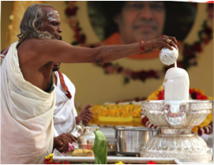

Professor Nanjunda Dixit

Atirudra Maha Yajnam will be offered under the able guidance of Archak, Agama Praveena, Agama Chatura, Brahmasri, Professor B. S. Nanjunda Dixit, Bangalore, India. Professor Dixt is a well know Vedic scholar and a teacher. He officiated and conducted two (2) Ati Rudram Maha Yajnams in the divine presence of Bhagawan Sri Sathya Sai Baba; at Prashanti Nilayam in 2006 and in Chennai in 2007. Professor Dixit has also conducted these Yajnas all over the world including Malaysia, Australia and other parts of the world.